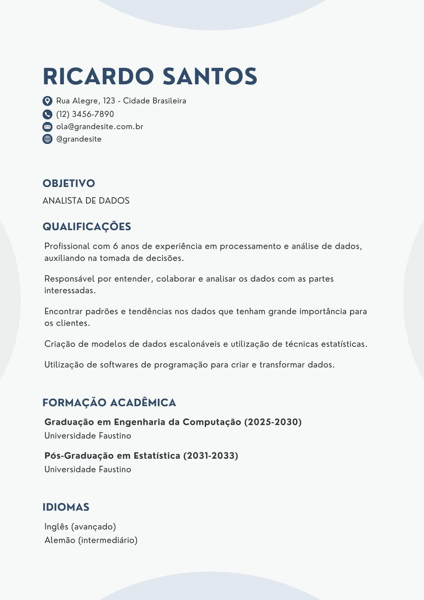

Escolha uma área para explorar
Conheça cada curso, veja o que se aprende e onde é possível trabalhar. Clique em “Saiba mais” para ver a trilha completa.


Por que o INTEGRA existe
Informação clara e acessível para ajudar você a escolher o próximo passo.
Uma etapa de novas escolhas
A passagem do Ensino Fundamental para o Ensino Médio é um momento importante na vida do estudante. Ela traz novas responsabilidades, decisões sobre a vida acadêmica e muitas dúvidas sobre o futuro profissional. Por isso, ter acesso a informações claras e fáceis de entender faz toda a diferença na hora de decidir.
A proposta do INTEGRA
O INTEGRA nasceu para tornar esse processo mais simples. Em uma única plataforma, reunimos informações sobre as escolas da região, as trilhas de formação, o planejamento de carreira, a elaboração de currículo e o programa Jovem Aprendiz.
Nosso objetivo
Com conteúdos simples e acessíveis, queremos ampliar o acesso à informação e incentivar a autonomia dos estudantes, ajudando cada jovem a fazer escolhas mais conscientes sobre sua trajetória educacional e profissional.
Quem faz o INTEGRA
Projeto desenvolvido por estudantes do Colégio Estadual Euzébio da Mota (TCC 2026): Miguel, Ana Carolina, Lucca, Thauane, Anthony e Nicolas.
Estudar e trabalhar ao mesmo tempo
Entenda o que é o programa, quem pode participar, como ele funciona na prática e como conseguir uma vaga.
O que é
O Jovem Aprendiz é um programa previsto em lei que une trabalho e formação profissional. O jovem é contratado por uma empresa, com carteira assinada, e ao mesmo tempo faz um curso de aprendizagem. Assim, aprende uma profissão na prática, com acompanhamento, sem deixar os estudos de lado.
Para muitos jovens, é a porta de entrada para o primeiro emprego: você ganha experiência, recebe salário e ainda constrói um currículo.
Quem pode participar
- Ter entre 14 e 24 anos (não há limite de idade para pessoas com deficiência)
- Estar com a escola em dia: quem ainda não concluiu o ensino médio precisa estar matriculado e frequentando
- Ter documentos básicos: RG, CPF e carteira de trabalho (a digital serve)
- Para menores de 18 anos, ter a autorização dos responsáveis
Como funciona na prática
- Contrato especialDura no máximo 2 anos, é registrado na carteira de trabalho e tem prazo determinado desde o início.
- Teoria e práticaVocê aprende em duas frentes: o curso em uma entidade formadora (como o SENAI ou o SENAC) e a rotina de trabalho na empresa.
- Jornada reduzidaEm geral, de até 6 horas por dia, para sobrar tempo de estudar. Quem já concluiu o ensino fundamental pode ter até 8 horas, desde que inclua as aulas teóricas.
- Salário e direitosO salário é, no mínimo, o salário-mínimo calculado por hora. Há também férias, 13º salário, FGTS e vale-transporte.
- Escola em diaA empresa e a entidade formadora acompanham a frequência. Faltas sem justificativa na escola podem encerrar o contrato.
- Fim do contratoAo terminar, a empresa pode contratar o jovem como funcionário, mas não é obrigatório. O certificado do curso fica com você.
Jovem Aprendiz × Estágio
Jovem Aprendiz
Tem carteira assinada e vínculo de emprego. Une trabalho a um curso de aprendizagem e recebe salário com os direitos trabalhistas.
Estágio
Não gera vínculo de emprego. É uma atividade ligada ao curso do estudante e costuma pagar uma bolsa, sem os mesmos direitos de um empregado.
Como conseguir uma vaga
- Organize os documentosSepare RG, CPF, carteira de trabalho e comprovante de matrícula. Se for menor de 18 anos, peça a autorização dos responsáveis.
- Monte um currículoUm currículo simples já ajuda. Veja o passo a passo na página Currículo.
- Procure as oportunidadesPesquise entidades formadoras e empresas da sua cidade e consulte o Sine do seu município.
- Participe da seleçãoCostuma ter entrevista ou dinâmica de grupo. Veja dicas na página Comportamento Profissional.
- Assine o contratoAprovado, você assina o contrato, começa o curso e inicia a rotina de trabalho.
Cuidados importantes
- Menores de 18 anos não podem trabalhar à noite nem em atividades perigosas ou insalubres
- Para menores de 18 anos, as férias devem coincidir com as férias escolares
- Desconfie de quem cobra qualquer valor para conseguir a vaga: o programa é gratuito
Perguntas frequentes
Quanto o Jovem Aprendiz recebe?
No mínimo, o salário-mínimo proporcional às horas trabalhadas. Algumas empresas pagam mais e oferecem benefícios extras.
Posso ser contratado depois do programa?
Pode. A empresa tem a opção de efetivar o jovem, mas não é uma obrigação. De qualquer forma, a experiência e o certificado ajudam em outras seleções.
Quem tem 13 anos pode participar?
Não. A idade mínima é de 14 anos.
Preciso continuar estudando?
Sim. Quem ainda não concluiu o ensino médio precisa manter a matrícula e a frequência na escola.
Empresas de médio e grande porte são obrigadas por lei a contratar aprendizes.

Como montar seu currículo, passo a passo
O currículo é o seu cartão de visitas. Um bom currículo de primeiro emprego é simples, claro e cabe em uma página.
Antes de começar
- Separe suas informações: dados pessoais, escola, cursos, atividades e projetos de que participou
- Crie um e-mail sério, com seu nome (por exemplo, nome.sobrenome), para usar nas candidaturas
- Leia a vaga com atenção e destaque o que você tem que combina com ela
Passo a passo
- Dados de contatoNo topo, coloque nome completo, telefone com WhatsApp, e-mail profissional e cidade. Não é preciso informar RG nem CPF.
- ObjetivoUma frase curta dizendo a vaga ou a área em que você quer atuar.Exemplo: “Busco oportunidade como jovem aprendiz na área administrativa, para aprender na prática e contribuir com a equipe.”
- FormaçãoInforme sua escola, a série ou o ano de conclusão e os cursos técnicos ou livres que já fez, sempre do mais recente para o mais antigo.
- ExperiênciasQuem está começando também tem experiências: projetos escolares, trabalho voluntário, estágios ou trabalhos informais. Conte o que você fez.Exemplo: “Organizei a feira de ciências da escola, dividindo tarefas entre 8 colegas.”
- HabilidadesListe o que você sabe fazer e que combina com a vaga: informática básica, comunicação, organização, trabalho em equipe, idiomas.
- Informações complementaresSe quiser, acrescente cursos livres, idiomas e a sua disponibilidade de horário.
- Revisão finalReleia tudo, confira a ortografia, use letra legível (como Arial ou Calibri, tamanho 11 ou 12) e salve em PDF. Peça para alguém conferir.
Modelo de estrutura

Dicas finais
Faça
- Ser objetivo e caber em uma página
- Usar títulos claros e espaçamento organizado
- Adaptar o currículo para cada vaga
- Salvar em PDF com o seu nome no arquivo
Evite
- Cometer erros de português
- Colocar informações falsas ou exageradas
- Usar e-mail com apelidos ou brincadeiras
- Encher de cores, fontes diferentes ou imagens
Postura que abre portas
Saiba o que é comportamento profissional, o que as empresas esperam de você e como chegar mais confiante ao primeiro emprego.
O que é
Comportamento profissional é o conjunto de atitudes que você mostra no trabalho: como se comunica, como cumpre combinados, como lida com erros e como trata as outras pessoas. Não depende de ter muita experiência — depende de escolhas do dia a dia.
As empresas valorizam isso tanto quanto o conhecimento técnico, principalmente em quem está começando. Um jovem educado, pontual e disposto a aprender costuma ser escolhido mesmo sem ter trabalhado antes.
As atitudes que mais contam
Pontualidade e organização
Chegar no horário, cumprir prazos e manter suas coisas em ordem passa confiança e respeito.
Comunicação clara e educada
Fale com respeito, ouça com atenção e escreva mensagens e e-mails sem erros.
Postura proativa
Pergunte quando tiver dúvida, em vez de travar, e ofereça ajuda quando puder.
Trabalho em equipe
Divida tarefas, respeite opiniões diferentes e valorize o resultado do grupo.
Responsabilidade
Assuma o que combinou fazer e avise com antecedência se algo atrapalhar.
Abertura a feedback
Receba críticas como aprendizado e não leve para o lado pessoal.
Como ficar mais confiante
Confiança não é não sentir medo. É seguir em frente mesmo com ele, e ela cresce com preparo e prática. Alguns caminhos:
- Prepare-se antesPesquise sobre a empresa e a vaga, ensaie sua apresentação e separe tudo com antecedência. Quem se prepara fica mais seguro.
- Treine em voz altaSimule uma entrevista com um familiar ou professor. Praticar diminui o nervosismo e melhora a fala.
- Conheça seus pontos fortesListe três qualidades suas com exemplos reais, como um trabalho em grupo ou um projeto da escola.
- Respire e fale com calmaAntes de entrar, respire fundo algumas vezes. Falar mais devagar ajuda a organizar as ideias.
- Cuide da posturaOlhe nos olhos, mantenha a coluna reta e deixe o celular guardado.
- Aceite que errar faz parteTodo mundo erra no começo. O importante é reconhecer, corrigir e aprender com o erro.
Na entrevista e no primeiro dia
Faça
- Chegar com alguns minutos de antecedência
- Vestir roupas limpas e adequadas
- Cumprimentar com educação e sorrir
- Fazer perguntas sobre a vaga e a rotina
Evite
- Mexer no celular durante a conversa
- Falar mal de escolas, professores ou chefes antigos
- Responder só com “sim” ou “não”
- Inventar experiências que você não tem
Hábitos para o dia a dia
- Use uma agenda ou o celular para anotar horários e tarefas
- Treine a escrita: releia mensagens antes de enviar
- Peça feedback a professores e colegas depois de apresentações e trabalhos
- Comemore pequenas conquistas — elas constroem a confiança aos poucos